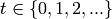
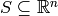
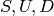
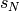
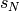
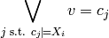
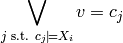

Tutorial and Examples¶
The rhtlp is developed for synthesis of embedded control systems, allowing planning to be done in a receding horizon manner. For more information regarding the theory behind this, please visit our wiki.
Synthesis of Embedded Control Systems¶
We consider a system that comprises the physical component, which we refer to as the plant, and the (potentially dynamic and not a priori known) environment in which the plant operates. The system may contain both continuous (physical) and discrete (computational) components. In summary, the problem we are interested in consists of
- discrete system state,
- continuous system state,
- (discrete) environment state, and
- specification.
Here, discrete state refer to the state that can take only a finite number of possible values while continuous state refer to the state that can take an infinite number of possible values, e.g., the position of the car. The environment state is related to factors over which the system does not have control such as the position of an obstacle and the outside temperature. At any given time, the controller regulates the system (or controlled) state such that the specification is satisfied, given the current value of the environment variables and the previous system states. We say that the specification is realizable if for any possible behavior of the environment, such a controller exists, i.e., there exists a strategy for the system to satisfy the specification.
Suppose the continuous state of the system evolves according to the following discrete-time linear time-invariant state space model: for 
(1)![s[t+1] &= As[t] + Bu[t] + Ed[t] \\
u[t] &\in U\\
d[t] &\in D\\
s[0] &\in S](_images/math/b1f10b70baff2f628915be231ca1541d0a25539b.png)
where  is the state space of the continuous
component of the system,
 is the set of admissible control inputs,
is the set of admissible control inputs,
 is the set of exogenous disturbances and
is the set of exogenous disturbances and
![s[t], u[t], d[t]](_images/math/1c7a315650e2379262eb5bee0f997d7ab5a6e95a.png) are the continuous state, the control signal and
the exogenous disturbance, respectively, at time
are the continuous state, the control signal and
the exogenous disturbance, respectively, at time  .
.
We consider the case where the sets  are bounded polytopes.
Let  be a finite set of atomic propositions of system variables.
Each of the atomic propositions in essentially captures the
states of interest.
We consider the specification of the form
be a finite set of atomic propositions of system variables.
Each of the atomic propositions in essentially captures the
states of interest.
We consider the specification of the form
(2)
Here, the assumption  on the initial condition of the system
is a propositional formula built from
on the initial condition of the system
is a propositional formula built from  The assumption
The assumption  on the environment and the desired behavior
on the environment and the desired behavior
 are LTL formulas built from
See our wiki for more details on the form of
are LTL formulas built from
See our wiki for more details on the form of  .
.

As illustrated in the figure above, our approach to this embedded control system synthesis consists of the following main steps:
Proposition Preserving Partition of Continuous State Space¶
Given the continuous state space  of the system and the set
of the system and the set  of
propositions on the continuous state of the system, we partition into a finite
number of cells such that all the continuous states in each cell satisfy exactly the
same set of propositions in .
of
propositions on the continuous state of the system, we partition into a finite
number of cells such that all the continuous states in each cell satisfy exactly the
same set of propositions in .
This can be done using the following function call:
- prop2part.prop2part2(state_space, cont_props_dict)[source]
Main function that takes a domain (state_space) and a list of propositions (cont_props), and returns a proposition preserving partition of the state space
Continuous state space discretization¶
Given a propositional preserving partition of the continuous state space and the evolution of the continuous state as in (1), we refine the partition based on the reachability relation between cells and obtain a finite state abstraction of the evolution of the continuous state, represented by a finite transition system.
This can be done using the following function call:
Digital design synthesis¶
The continuous state space discretization generates a finite state abstraction
of the continuous state, represented by a finite transition system.
Each state in this finite transition system corresponds to a cell in the continuous
domain.
A transition  in this finite state system indicates that
from any continuous state
in this finite state system indicates that
from any continuous state  that belongs to cell
that belongs to cell  ,
there exists a sequence of control inputs
,
there exists a sequence of control inputs  that takes the system to another continuous state  in cell
that takes the system to another continuous state  in cell  .
Hence, under the assumption that the specification is stutter invariant,
we can describe the continuous dynamics by an LTL formula of the form
.
Hence, under the assumption that the specification is stutter invariant,
we can describe the continuous dynamics by an LTL formula of the form

where  is a new discrete variable that describes in which cell
the continuous state is.
is a new discrete variable that describes in which cell
the continuous state is.
Since the partition is proposition preserving, all the continuous states that belong
to the same cell satisfy exactly the same set of propositions on the continuous
state. By the abuse of notation, we write  if all the continuous
states in cell satisfy proposition
if all the continuous
states in cell satisfy proposition  .
Then, we can replace any proposition on the continuous state variables
by the formula .
.
Then, we can replace any proposition on the continuous state variables
by the formula .
Putting everything together, we now obtain a specification of the form in (2). We can then use the GR(1) Game implementation in JTLV to automatically synthesize a planner that ensures the satisfaction of the specification, taking into account all the possible behaviors of the environment. This can be done using the following steps.
Generate input to JTLV
- jtlvint.generateJTLVInput(env_vars={}, sys_disc_vars={}, spec=[], disc_props={}, disc_dynamics=<prop2part.PropPreservingPartition instance at 0x233e0f8>, smv_file='tmp.smv', spc_file='tmp.spc', file_exist_option='a', verbose=0)[source]
Generate JTLV input files: smv_file and spc_file.
Input:
- env_vars: a dictionary {str : str} or {str : list} whose keys are the names of environment variables and whose values are their possible values, e.g., boolean or {0, 2, ..., 5} or [0, 2, 3, 4, 5].
- sys_disc_vars: a dictionary {str : str} or {str : list} whose keys are the names of discrete system variables and whose values are their possible values.
- spec: a list of two strings that represents system specification of the form assumption -> guarantee; the first string is the assumption and the second string is the guarantee.
- disc_props: a dictionary {str : str} whose keys are the symbols for propositions on discrete variables and whose values are the actual propositions on discrete variables.
- disc_dynamics: a PropPreservingPartition object that represents the transition system obtained from the discretization procedure.
- smv_file: a string that specifies the name of the resulting smv file.
- spc_file: a string that specifies the name of the resulting spc file.
- file_exist_option: a string that indicate what to do when the specified smv_file or spc_file exists. Possible values are: ‘a’ (ask whether to replace or create a new file), ‘r’ (replace the existing file), ‘n’ (create a new file).
- verbose: an integer that specifies the verbose level. If verbose is set to 0, this function will not print anything on the screen.
Synthesize the discrete planner
- jtlvint.computeStrategy(smv_file, spc_file, aut_file='', heap_size='-Xmx128m', priority_kind=3, init_option=1, file_exist_option='a', verbose=0)[source]
Compute an automaton satisfying the spec in smv_file and spc_file and store in aut_file. Return the realizability of the spec.
Input:
smv_file: a string that specifies the name of the smv file.
spc_file: a string that specifies the name of the spc file.
aut_file: a string that specifies the name of the file containing the resulting automaton.
heap_size: a string that specifies java heap size.
priority_kind: a string of length 3 or an integer that specifies the type of priority used in extracting the automaton. Possible values of priority_kind are:
- 3 - ‘ZYX’
- 7 - ‘ZXY’
- 11 - ‘YZX’
- 15 - ‘YXZ’
- 19 - ‘XZY’
- 23 - ‘XYZ’
Here X means that the controller tries to disqualify one of the environment assumptions, Y means that the controller tries to advance with a finite path to somewhere, and Z means that the controller tries to satisfy one of his guarantees.
init_option: an integer in that specifies how to handle the initial state of the system. Possible values of init_option are
- 0 - The system has to be able to handle all the possible initial system states specified on the guarantee side of the specification.
- 1 (default) - The system can choose its initial state, in response to the initial environment state. For each initial environment state, the resulting automaton contains exactly one initial system state, starting from which the system can satisfy the specification.
- 2 - The system can choose its initial state, in response to the initial environment state. For each initial environment state, the resulting automaton contain all the possible initial system states, starting from which the system can satisfy the specification.
file_exist_option: a string that indicate what to do when the specified aut_file exists. Possible values are: ‘a’ (ask whether to replace or create a new file), ‘r’ (replace the existing file), ‘n’ (create a new file).
verbose: an integer that specifies the verbose level.
Construct the automaton
- class automaton.Automaton(states_or_file=[], varnames=[], verbose=0)[source]
Automaton class for representing a finite state automaton. An Automaton object contains the following field:
- states: a list of AutomatonState objects.
Automaton([states_or_file, varname, verbose]) constructs an Automaton object based on the following input:
- states_or_file: a string containing the name of the aut file to be loaded or a list of AutomatonState objects to be assigned to the states of this Automaton object.
- varname: a list of all the variable names. If it is not empty and states_or_file is a string representing the name of the aut file to be loaded, then this function will also check whether the variables in aut_file are in varnames.
- Step 1 and 2 above can be combined using the following function:
- jtlvint.synthesize(env_vars={}, sys_disc_vars={}, spec='', disc_props={}, disc_dynamics=<prop2part.PropPreservingPartition instance at 0x233eb70>, smv_file='tmp.smv', spc_file='tmp.spc', aut_file='', heap_size='-Xmx128m', priority_kind=3, init_option=1, file_exist_option='a', verbose=0)[source]
Compute an automaton satisfying spec. Return the realizability of spec. If spec is realizable, the resulting automaton will be stored in the aut_file. Otherwise, the counter examples will be stored. This function essentially combines generateJTLVInput and computeStrategy
Input:
- env_vars: a dictionary {str : str} or {str : list} whose keys are the names of environment variables and whose values are their possible values, e.g., boolean or {0, 2, ..., 5} or [0, 2, 3, 4, 5].
- sys_disc_vars: a dictionary {str : str} or {str : list} whose keys are the names of discrete system variables and whose values are their possible values.
- spec: a list of two strings that represents system specification of the form assumption -> guarantee; the first string is the assumption and the second string is the guarantee.
- disc_props: a dictionary {str : str} whose keys are the symbols for propositions on discrete variables and whose values are the actual propositions on discrete variables.
- disc_dynamics: a PropPreservingPartition object that represents the transition system obtained from the discretization procedure.
- smv_file: a string that specifies the name of the resulting smv file.
- spc_file: a string that specifies the name of the resulting spc file.
- aut_file: a string that specifies the name of the file containing the resulting automaton.
- heap_size: a string that specifies java heap size.
- priority_kind: a string of length 3 or an integer that specifies the type of priority used in extracting the automaton. See the documentation of the computeStrategy function for the possible values of priority_kind.
- init_option: an integer in that specifies how to handle the initial state of the system. See the documentation of the computeStrategy function for the possible values of init_option.
- file_exist_option: a string that indicate what to do when the specified smv_file or spc_file exists. Possible values are: ‘a’ (ask whether to replace or create a new file), ‘r’ (replace the existing file), ‘n’ (create a new file).
- verbose: an integer that specifies the verbose level. If verbose is set to 0, this function will not print anything on the screen.
Specification File and Parser¶
Example 1: Robot Motion Planning with only Discrete Decisions¶
This example is provided in examples/robot_discrete_simple.py. It illustrates the use of the jtlvint module in synthesizing a planner for a robot that only needs to make discrete decision.

We consider the robot moving around the regions as shown in the above figure while receiving externally triggered park signal. The specification of the robot is

We cannot, however, deal with this specification directly since it is not in the form of
GR[1].
An equivalent GR[1] specification of the above specification can be obtained
by introducing an auxiliary discretey system variable  initialized to
True. The transition relation of is given by
initialized to
True. The transition relation of is given by

To automatically synthesize a planner for this robot, we first import the necessary modules.
from prop2part import Region, PropPreservingPartition
from jtlvint import *
from automaton import *
Specify the smv file, spc file and aut file.
testfile = 'robot_discrete_simple'
path = os.path.abspath(os.path.dirname(sys.argv[0]))
smvfile = os.path.join(path, 'specs', testfile+'.smv')
spcfile = os.path.join(path, 'specs', testfile+'.spc')
autfile = os.path.join(path, 'specs', testfile+'.aut')
Specify the environment variables.
env_vars = {'park' : 'boolean'}
Specify the discrete system variable.
disc_sys_vars = {'X0reach' : 'boolean'}
Specify the transition system representing the continuous dynamics. First, we list the propositions on the continuous states. Here, these propositions specify in which cell the robot is, i.e., Xi means that the robot is in cell Ci. Then, we specify the regions. Note that the first argument of Region(poly, prop) should be a list of polytopes. But since we are not dealing with the actual controller, we will just fill it with a string (think of it as a name of the region). The second argument of Region(poly, prop) is a list that specifies which propositions in cont_props above is satisfied. As specified below, regioni satisfies proposition Xi. Finally, we specify the adjacency between regions. disc_dynamics.adj[i][j] = 1 if starting from region j, the robot can move to region i while only staying in the union of region i and region j.
disc_dynamics = PropPreservingPartition(list_region=[], list_prop_symbol=[])
disc_dynamics.list_prop_symbol = ['X0', 'X1', 'X2', 'X3', 'X4', 'X5']
disc_dynamics.num_prop = len(disc_dynamics.list_prop_symbol)
region0 = Region('C0', [1, 0, 0, 0, 0, 0])
region1 = Region('C1', [0, 1, 0, 0, 0, 0])
region2 = Region('C2', [0, 0, 1, 0, 0, 0])
region3 = Region('C3', [0, 0, 0, 1, 0, 0])
region4 = Region('C4', [0, 0, 0, 0, 1, 0])
region5 = Region('C5', [0, 0, 0, 0, 0, 1])
disc_dynamics.list_region = [region0, region1, region2, region3, region4, region5]
disc_dynamics.num_regions = len(disc_dynamics.list_region)
disc_dynamics.trans = [[1, 1, 0, 1, 0, 0], \
[1, 1, 1, 0, 1, 0], \
[0, 1, 1, 0, 0, 1], \
[1, 0, 0, 1, 1, 0], \
[0, 1, 0, 1, 1, 1], \
[0, 0, 1, 0, 1, 1]]
Specification.
assumption = 'X0reach & []<>(!park)'
guarantee = '[]<>X5'
guarantee += ' &\n\t[](next(X0reach) = ((X0 | X0reach) & !park))'
Generate input to JTLV.
newvarname = generateJTLVInput(env_vars, disc_sys_vars, [assumption, guarantee], \
{}, disc_dynamics, smvfile, spcfile, 2)
Check realizability.
realizability = checkRealizability(smvfile, spcfile, autfile, '-Xmx128m', 11)
Construct an automaton.
computeStrategy(smvfile, spcfile, autfile, '-Xmx128m', 11, 3)
aut = Automaton(autfile, [], 3)